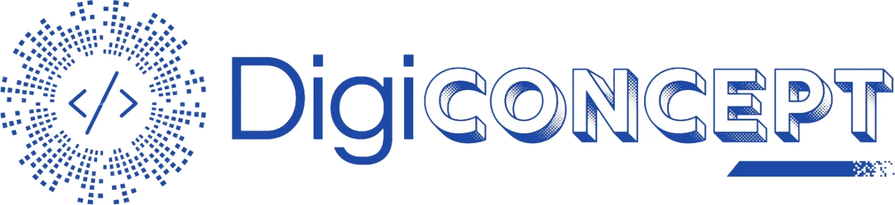

Des logos pour des proches
Des identités créées pour les petites entreprises de mon entourage. À chaque fois, je pars du métier pour trouver le symbole.



D'autres expériences arrivent bientôt ici.
Des identités créées pour les petites entreprises de mon entourage. À chaque fois, je pars du métier pour trouver le symbole.

D'autres expériences arrivent bientôt ici.